Probability
CSCI 4511/6511
Announcements
- Homework 3 Due 14 Oct
- Midterm Exam - 16 Oct
- In class
- Open note
Review
Symbols
- Propositional symbols
- Similar to boolean variables
- Either True or False
Sentences
- What is a linguistic sentence?
- Subject(s)
- Verb(s)
- Object(s)
- Relationships
- What is a logical sentence?
- Symbols
- Relationships
Familiar Logical Operators
- \(\neg\)
- “Not” operator, same as CS (
!,not, etc.)
- “Not” operator, same as CS (
- \(\land\)
- “And” operator, same as CS (
&&,and, etc.) - This is sometimes called a conjunction.
- “And” operator, same as CS (
- \(\lor\)
- “Inclusive Or” operator, same as CS.
- This is sometimes called a disjunction.
Unfamiliar Logical Operators
- \(\Rightarrow\)
- Logical implication.
- If \(X_0 \Rightarrow X_1\), \(X_1\) is always True when \(X_0\) is True.
- If \(X_0\) is False, the value of \(X_1\) is not constrained.
- Logical implication.
- \(\iff\)
- “If and only If.”
- If \(X_0 \iff X_1\), \(X_0\) and \(X_1\) are either both True or both False.
- Also called a biconditional.
Equivalent Statements
- \(X_0 \Rightarrow X_1\) alternatively:
- \((X_0 \land X_1) \lor \neg X_0\)
- \(X_0 \iff X_1\) alternatively:
- \((X_0 \land X_1) \lor (\neg X_0 \land \neg X_1)\)
Entailment
- \(KB \models A\)
- “Knowledge Base entails A”
- For every model in which \(KB\) is True, \(A\) is also True
- One-way relationship: \(A\) can be True for models where \(KB\) is not True.
- Vocabulary: \(A\) is the query
Knowing Things
Falsehood:
- \(KB \models \neg A\)
- No model exists where \(KB\) is True and \(A\) is True
It is possible to not know things:1
- \(KB \nvdash A\)
- \(KB \nvdash \neg A\)
Satisfiability
Commonly abbreviated “SAT”
First NP-complete problem
\((X_0 \land X_1) \lor X_2\)
- Satisfied by \(X_0 = \text{True}, X_1 = \text{False}, X_2 = \text{True}\)
- Satisfied for any \(X_0\) and \(X_1\) if \(X_2 = \text{True}\)
\(X_0 \land \neg X_0 \land X_1\)
- Cannot be satisfied by any values of \(X_0\) and \(X_1\)
Conjunctive Normal Form
- Literals — symbols or negated symbols
- \(X_0\) is a literal
- \(\neg X_0\) is a literal
- Clauses — combine literals and disjunction using disjunctions (\(\lor\))
- \(X_0 \lor \neg X_1\) is a valid disjunction
- \((X_0 \lor \neg X_1) \lor X_2\) is a valid disjunction
Conjunctive Normal Form
- Conjunctions (\(\land\)) combine clauses (and literals)
- \(X_1 \land (X_0 \lor \neg X_2)\)
- Disjunctions cannot contain conjunctions:
- \(X_0 \lor (X_1 \land X_2)\) not in CNF
- Can be rewritten in CNF: \((X_0 \lor X_1) \land (X_0 \lor X_2)\)
Converting to CNF
- \(X_0 \iff X_1\)
- \((X_0 \Rightarrow X_1) \land (X_1 \Rightarrow X_0)\)
- \(X_0 \Rightarrow X_1\)
- \(\neg X_0 \lor X_1\)
- \(\neg (X_0 \land X_1)\)
- \(\neg X_0 \lor \neg X_1\)
- \(\neg (X_0 \lor X_1)\)
- \(\neg X_0 \land \neg X_1\)
Probability
Randomness and Uncertainty
- We don’t know things about future events
- Someone else might know
- Example: expectimax!
- Ghost could behave randomly
- Ghost could behave according to some plan
- We model behavior as random
The Random Variable
- Uncertain future event: random variable
- Probability:
\[P(x) = \lim_{n \to \infty} \frac{n_x}{n}\]
- Probabilities constrained \(0 \leq P(x) \leq 1\) for any \(x\)
The Random Variable
- In ensemble of events, what fraction represent event \(x\) ?
- What’s troubling about this?
- How do we quantify probability based on observations?
- How do we quantify probability without direct observations?
Plausibility of Statements
- “A is more plausible than B”
- \(P(A) > P(B)\)
- “A is as plausible as B”
- \(P(A) = P(B)\)
- “A is impossible”
- \(P(A) = 0\)
- “A is certain”
- \(P(A) = 1\)
Probability Distribution
- Enumerate possible outcomes1
- Assign probabilities to outcomes
- Distribution: ensemble of outcomes mapped to probabilities
- Works for discrete and continuous cases
Combinatorics
- Enumerating outcomes is a counting problem
- We know how to solve counting problems
- Permutations:
- Ordering \(n\) items: \(n!\)
- Ordering \(n\) items, \(k\) of which are alike: \(\frac{n!}{k!}\)
- … \(k_1\), \(k_2\) of which are alike: \(\frac{n!}{k_1!k_2!}\)
I Am Extremely Sorry
…if you thought this course was going to be about LLMs
Combinatorics
- How many possible outcomes are there?
- How many possible outcomes are there of interest?
- Assume all outcomes have equal probability
- Or don’t
- Divide
- Weight if necessary
Choice
- \(n\) events
- \(k\) are of interest
- \(n-k\) are not of interest
Possible combinations:
\[\binom{n}{k} = \frac{n!}{k!(n-k)!}\]
Bernoulli Trials
- “Single event” that occurs with probability \(\theta\)
- \(P(E) = \theta\)
- \(P(\neg E) = 1 - \theta\)
- Alternate notations:1
- \(P(E^C) = 1 - \theta\)
- \(P(\bar{E}) = 1 - \theta\)
- Examples?
Math Notation
- \(P(E)\)
- Probability of some event \(E\) occuring
- \(P\{X=a\}\)
- Probability of random variable \(X\) taking value \(a\)
- \(p(a)\)
- Probability of random variable taking value \(a\)
Bernoulli Random Variable
- Bernoulli trial:
- Variable, takes one of two values
- Coin toss: \(H\) or \(T\)
- \(P\{X = H\} = \theta\)
- \(P\{X = T\} = 1 - \theta\)
Expected Value
- Variable’s values can be numeric values:
- Coin toss \(H = 8\) and \(T2\)
- \(P\{X = 8\} = \theta\)
- \(P\{X = 2\} = 1 - \theta\)
- Expected value:
- \(E[X] = H \cdot \theta + T \cdot (1-\theta)\)
- \(E[X] = 8 \cdot \theta + 2 \cdot (1-\theta)\)
Expected Value
Of a variable: \[E[X] = \sum_{i=0}^n x_i \cdot p(x_i)\]
Of a function of a variable:
\[E[g(x)] = \sum_{i=0}^n g(x_i) \cdot p(x_i) \neq g(E[X])\]
Variance
- How much do values vary from the expected value?
\[\text{Var}(X) = E[(X - E[X])^2]\]
- \(E[X]\) represents mean, or \(\mu\)
- We’re really interested in \(E[|X-\mu|]\)
- Absolute values are mathematically troublesome
- Standard deviation: \(\sigma\) = \(\sqrt{\text{Var}}\)
Variance
\[\begin{align}\text{Var}(X) & = E[(E[X]-\mu)^2]\\ & = \sum_x (x-\mu)^2 p(x) \\ & = \sum_x (x^2 - 2 x \mu + \mu^2) p(x) \\ & = \sum_x x^2 p(x) - 2 \mu \sum_x x p(x) + \mu^2 \sum_x p(x) \\ & = E[X^2] - 2 \mu \mu + \mu^2 \\ & = E[X^2] - E[X]^2 \end{align}\]
How To Lie With Statistics

Discrete Distributions
Binomial Distribution
- Bernoulli trial:
- Successes and failures
- \(P\{X=1\} = \theta\)
- \(P\{X=0\} = 1 - \theta\)
- Conduct many trials. How many succeed?
Binomial Distribution
- Probability of \(n\) successes in \(n\) trials: \(\theta^n\)
- Probability of \(k\) successes in \(n\) trials:
- \(\theta^k (1-\theta)^{(n-k)}\) …per ordering!
- \(n!\) orderings
- \(k\) success are alike and \((n-k)\) failures are alike
- \(\frac{n!}{k!(n-k)!}\) orderings of k successes
- \(P\{X=k\} = \binom{n}{k} \theta^k (1-\theta)^{(n-k)}\)
Binomial Distribtion
\(n = 12, \theta=0.2\)
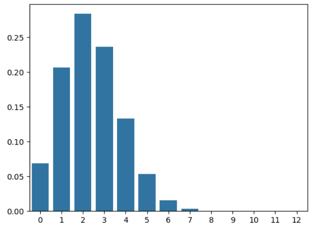
\(n = 12, \theta=0.6\)
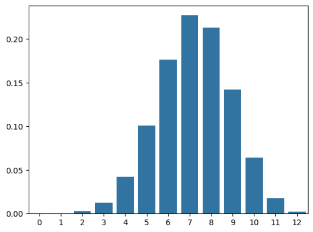
scipy.stats üòé
Geometric Distribution
- Perform Bernoulli trials until first success
- \(X\) represents number of failures
- \(P\{X=k\} = \theta (1-\theta)^{(k)}\) (only one ordering!)
Geometric Distribtion
\(\theta = 0.4\)
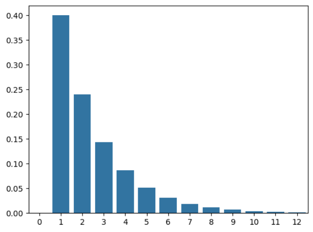
\(\theta = 0.2\)
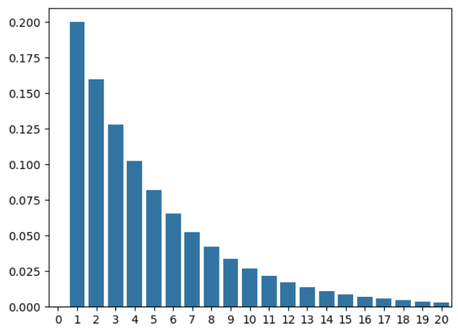
Negative Binomial Distribution
- “General case” of Geometric distribution
- Number of trials until \(r\) successes observed
- \(P\{X=k\} = \binom{k + r - 1}{k}(1-\theta)^k \theta^r\)
Negative Binomial Distribution
\(r = 3, \theta = 0.5\)
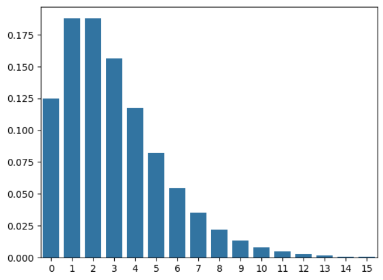
\(r = 2, \theta = 0.25\)
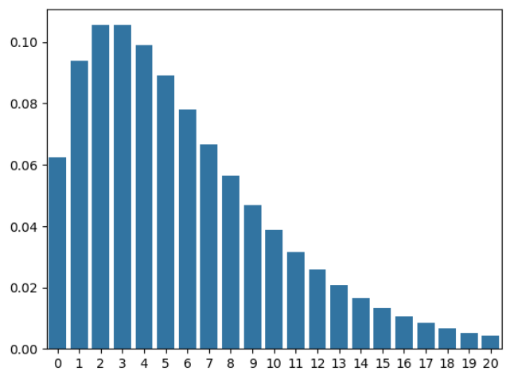
Poisson Distribution
- Events “arrive” independently through time
- People at a bus stop
- Requests to a server
- Number of arrivals per time interval
- Parameter \(\lambda\) – average number of arrivals
\[P\{X=k\} = \frac{\lambda^k e^{-\lambda}}{k!}\]
Poisson Distribution
\(\lambda = 5\)
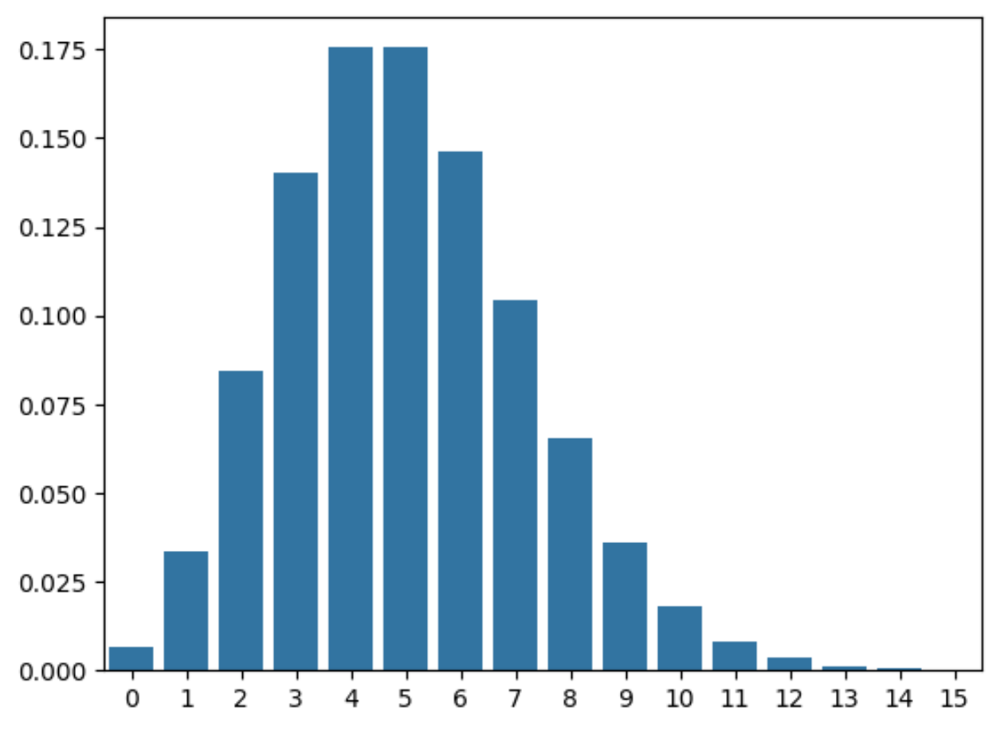
\(\lambda = 2\)
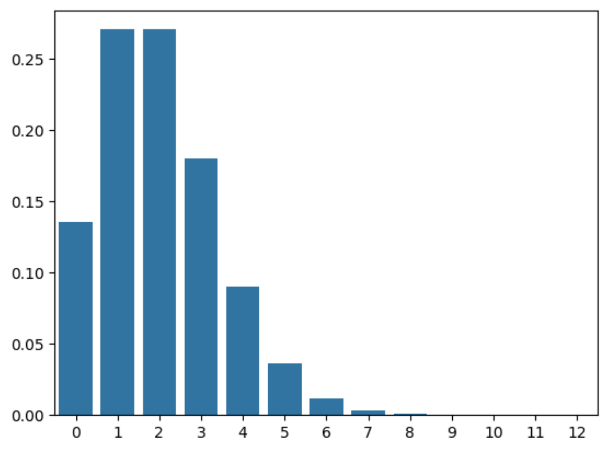
Continuous Distributions
Continuous vs. Discrete
- Discrete:
- PMF: \(p(x)\)
- \(E[X] = \sum_i x_i p(x_i)\)
- Continuous:
- PDF: \(f(x)\)
- CDF: \(P\{X \leq x\} = F(x) = \int_{-\infty}^{x} f(x) \; dx\)
- \(E[X] = \int_{-\infty}^{\infty} x f(x) \; dx\)
Uniform Distribution
- Takes any value in range with equal probability
- Range: \([a, b]\)
- Nomenclature: \(U(a, b)\)
- \(U(0,1)\) is “standard” random variable for modeling
Uniform Distribution
\(U(0,1)\)
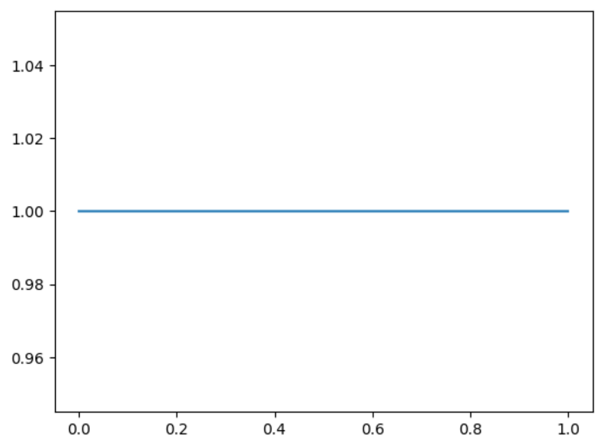
\(U(0,5)\)
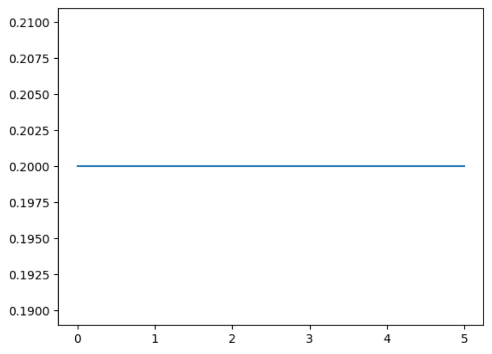
Normal Distribution
\(\mu = 1, \sigma^2 = 1\)
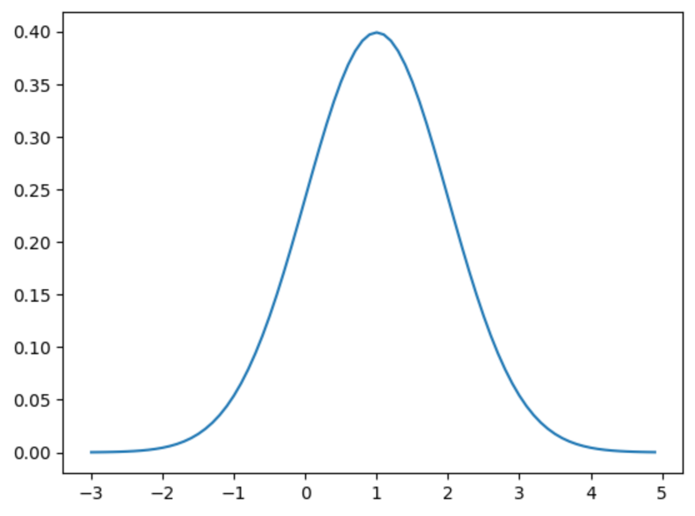
\(\mu = 3, \sigma^2 = 2\)
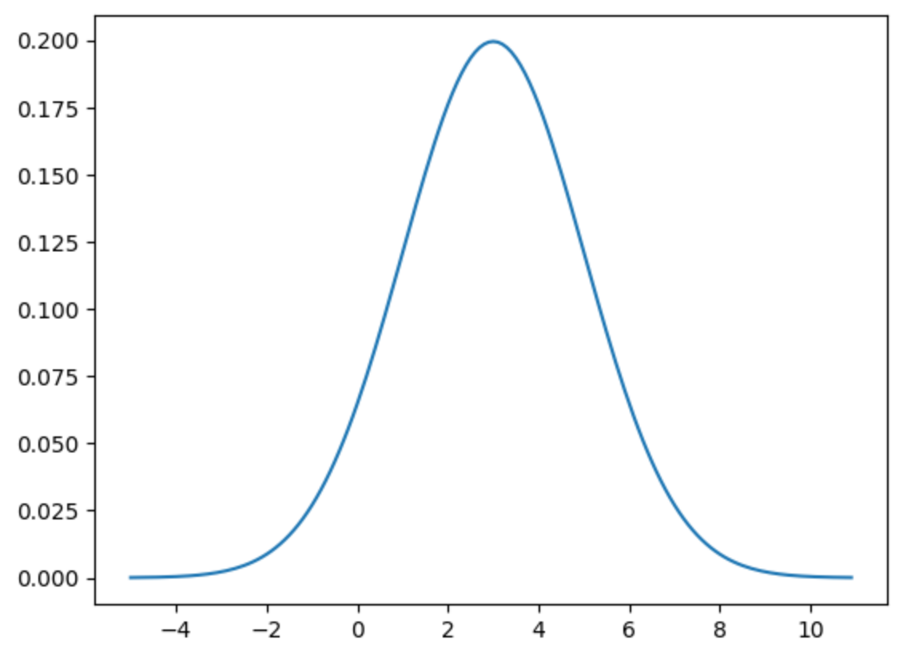
(Remarkably unsatisfying.)
Joint Distributions
- Distribution over multiple variables
- \(P(x, y)\) represents \(P\{X=x, Y=y\}\)
- Marginal distribution:
- \(P(x) = \sum_y P(x,y)\)
Independence
Conditional probability:
\[P(x | y) = \frac{P(x, y)}{P(y)}\]
Bayes’ rule:
\[P(x | y) = \frac{P(y | x)P(x)}{P(y)} \]
Conditional Independence
\[P(x | y) = P(x) \rightarrow P(x,y) = P(x) P(y)\]
- Two variables can be conditionally independent…
- … when conditioned on a third variable
Parameter Space
- \(n\) Bernoulli R.V.s
- Fully dependent joint distribution:
- \(2^n-1\) parameters
- Fully independent joint distribution:
- \(n\) parameters üòå
Notice a theme?
Bayesian Networks
References
Stuart J. Russell and Peter Norvig. Artificial Intelligence: A Modern Approach. 4th Edition, 2020.
Mykal Kochenderfer, Tim Wheeler, and Kyle Wray. Algorithms for Decision Making. 1st Edition, 2022.
Ross, *
Stanford CS231
UC Berkeley CS188